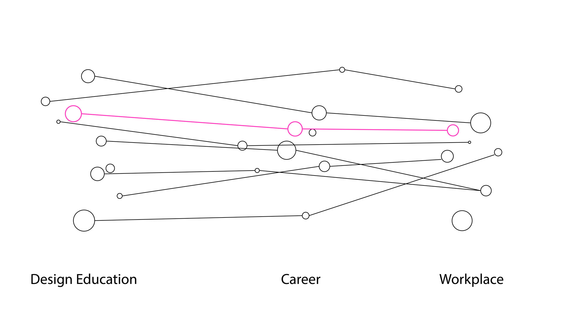
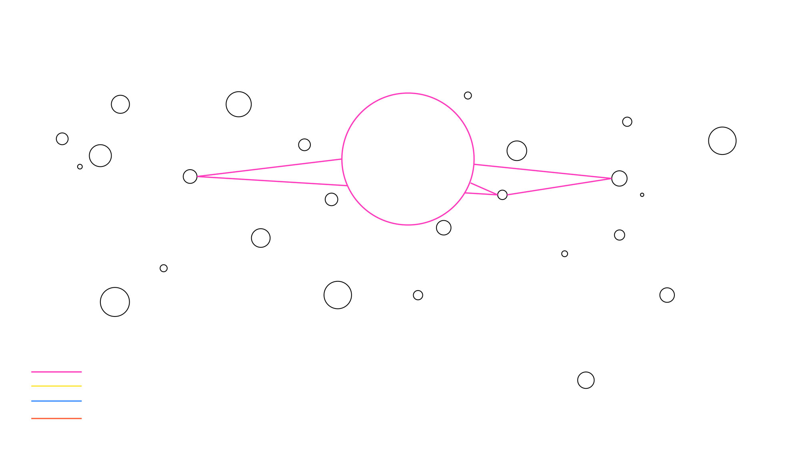
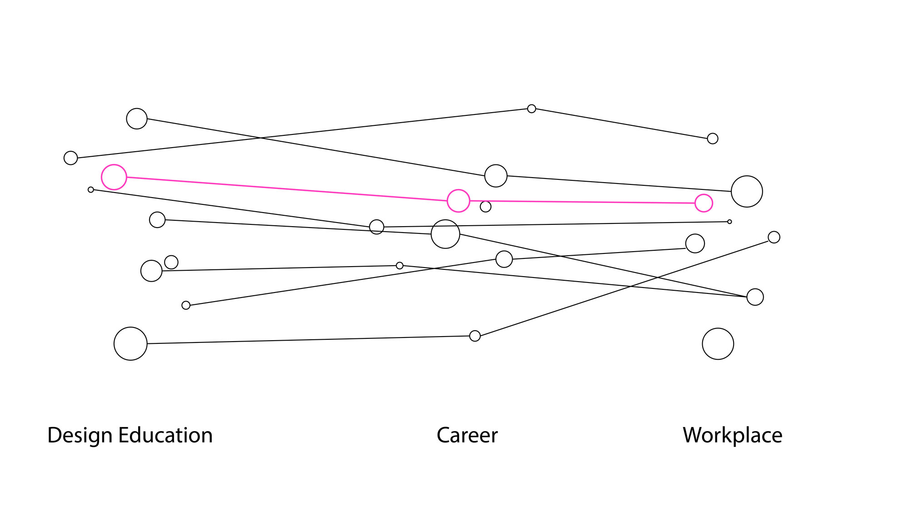
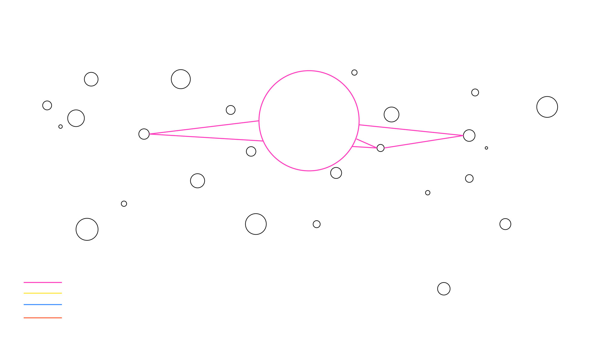

Design Census
Challenge
Gather and visualize data about CMU Design alumni in Pittsburgh, PA. Inspired by AIGA's 2017 Design Census.
Outcome
An interactive installation that allows visitors to discover and explore the career paths of 33 design professionals.
Team(5) Tiffany Jiang, Anqi Wan, Raphaël Weikart, Sharon Yu, me
Overview
Survey
We surveyed CMU School of Design alumni about their school and summer experiences, and selected 6 questions that we felt best showed their journeys from students to professionals:
- What is your current job title and workplace?
- Which classes or skills learned at CMU have been particularly valuable to your current work?
- How has your experience in college influenced your career choice?
- What's the best piece of advice you received while at CMU?
- What were deciding factors in choosing your current (or last) job?
- What was your most formative summer experience (job, research, travel)?
Installation
The installation is an interactive visualization of our survey data. Each cube represents an alumni, and each cube face corresponds to a survey question. "Activating" a cube face reveals that alumni's answer to that question, and cubes with related answers are lit up to reveal people with similar paths. The video shows how someone might interact with this experience.
Process
Form
The responses we received were anecdotal and compelling. We felt that the most meaningful way to present our data was to help viewers discover the connections that people have through school and design, even if their paths diverged later on.
 



We considered screen-based visuals for a while, but then started exploring physical objects for more interactivity. We were drawn to cubes because of how they called back to building blocks and play.
To test our ideas, we used a combination of digital and physical mock ups.
Visuals
In creating a visual system and tone, we explored both abstract and literal ways to represent our data. We chose the final cube design (below) for its use of simple shapes that subtly suggest letters. We found the meaning of the cube faces to be easiest for people to understand this way, especially when paired with a key word from the question.
Interactive Prototype
To convey the experience of our installation, including scale and environment, we set up a mock installation. We imagined the piece existing in a space where visitors could walk up freely, and included an introductory animation to provide more context. The team divided the work of animating sequences.
Learning Outcomes
- Exploring collected data and identifying points of interest
- Designing for the experience of discovery
- Balancing readability and clarity of information with visual interest, in tangible interactions as well as motion
Reflection
Although explorative and abstract, I see this project as possibly a proof of concept for an interactive experience that could enhance data-driven stories. For example, I could see exploring an adaptation of this project for a social media or networking platform like LinkedIn.